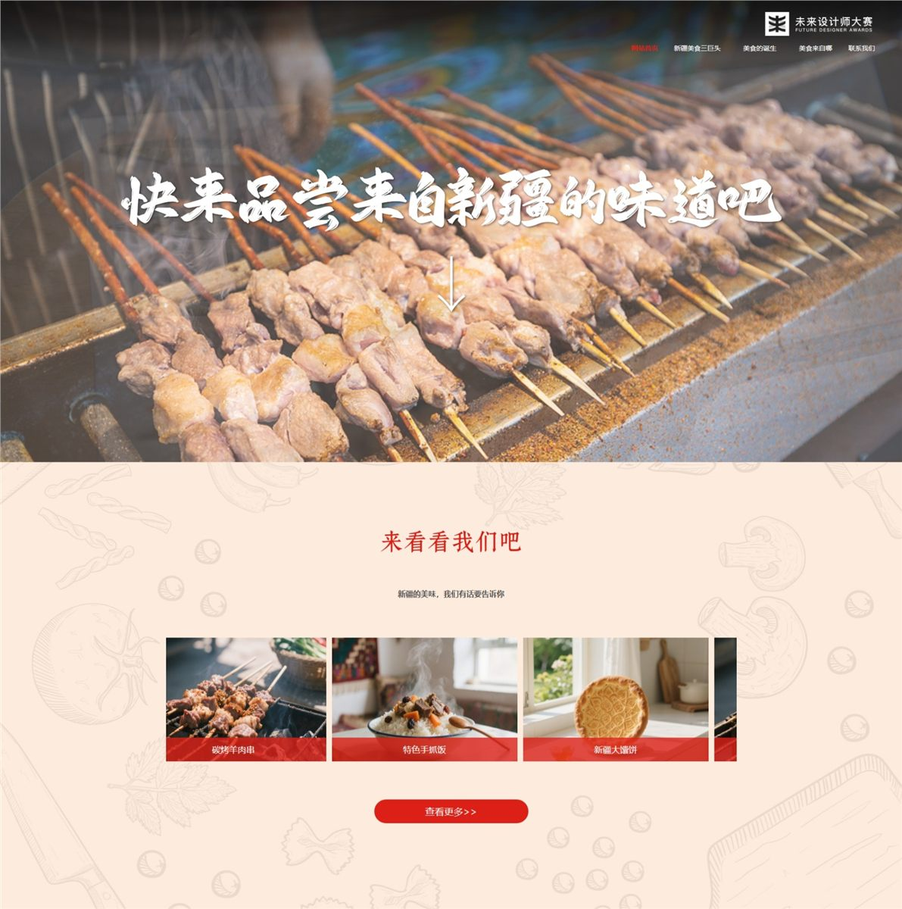
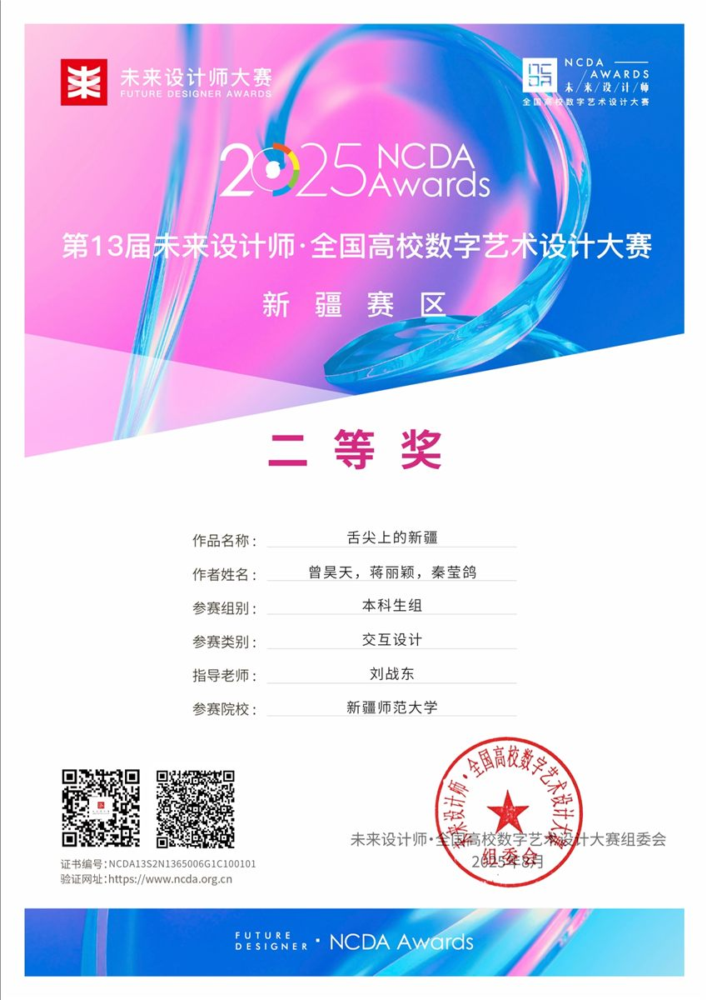

一张图带你了解新疆特色美食
一张汇集新疆特色美食的信息图网页，通过图文结合的方式展示烤羊肉串、大盘鸡、抓饭、拉条子、烤包子、馕等经典新疆美食。页面采用卡片式布局，每道美食配有精美图片和简要介绍，让你一目了然地认识新疆的美食文化。
点击图片可放大查看
这个项目是我参加未来设计师大赛的比赛项目，最后荣获了新疆赛区二等奖，可惜没能入围国奖，现在想想还是页面做得偏简单了。项目是三个人一起完成的，我担任组长，还有一位学姐和另一位同学。当时我还教了学姐用 GitHub 合作开发，每次拉取最新代码，看到她们做好的新页面出现在我电脑上，那种感觉还挺神奇的。现在回过头来写感悟，很多细节已经记不太清了，但记得有一次放假回家把这个项目给我爸看，他挺替我骄傲的。

这是我们的奖状哦